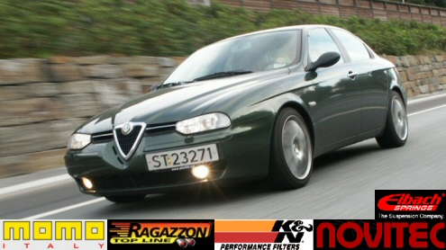
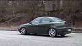

| .: She has got a new owner :. |
| .: .:. :. |

| .: The specs for my bella :. |
| .: Pictures :. |
| .: Eibach lowering :. |
| .: K&N 57i Induction kit :. |
| .: Ragazzon muffler :. |
| .: Videos :. |
 |
Published: 17.04.2004 Type: DivX v5.1.1 - 7,5 MB - 1min This is a video of me driving by a couple of times and from my new Ragazzon muffler. |
 |
Published: 20.04.2004 Type: DivX v5.1.1 Size: 19Mb Duration: 2min 28sec Me driving at Eikås Gocart track. Listen to the nice Ragazzon sound! weeeh. |
| .: Before & After pictures :. |
| .: .:. :. |